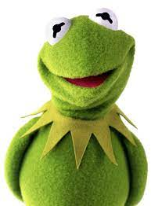

Main Characters
Kermit the Frog
Age: 68
Job: Host for the muppet show
Descripion: Kermit is polite at all times, no matter how rude someone is treating him. As much as Miss Piggy beats up and abuses Kermit, he continues to turn the other cheek.

Fozzie Bear
Age: Never specifyed but portrayed a middle-aged
Job: Comedian(If you can call him one)for the muppet show
Description:
Fozzie has a heart of gold and loves his friends, but he doesn't hesitate to fight back against hecklers and detractors. He might be a bit clueless and seemingly lacks self-awareness, but he's comfortable in his own bearskin and will never stop going for a laugh.

Miss Piggy
Age: 50
Job: Singer, magazine editor, and martial artist icon
Descripion: She believes she is the true star of the show and often uses French phrases to show her status. She also has a thing for Kermit the Frog and believes the two of them are destined to be together. She also has a strong temper and knows karate, a warning for anyone who crosses her.

Gonzo the Great
Age: 54
Job: Stunt performer, Artist, and a plumber
Descripion: Gonzo wouldn't hurt a fly, perhaps because he knows how it feels to be criticized and ostracized. He often feels as if no one really understands him, and seeks daily to prove to his audience that he is a performer worthy of attention and greatness.

Images by: themarioman56 From: DeviantArt
Home